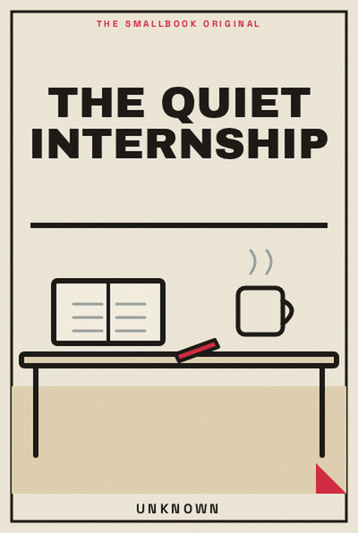

Library › Business & Startups
The Quiet Internship - Summary & Key Lessons

Early careers grow fastest when curiosity, reliability and visible learning matter more than performing confidence.
📖 OPEN THE FULL INTERACTIVE BREAKDOWN →🌐 Read it in Hindi, Hinglish, Gujarati, Tamil & 22 more languages, with audio.
💡 The Big Idea
Early careers grow fastest when curiosity, reliability and visible learning matter more than performing confidence. The lessons below are designed to be used slowly: read one, try it in a real situation, and return with evidence rather than agreement.
🧠 The 8 Key Lessons
Lesson 1: Arrive With Questions
Chapter 1: Arrive With Questions
A good first week is about understanding the system before proposing fixes. Early careers grow fastest when curiosity, reliability and visible learning matter more than performing confidence. The useful question is not whether this is perfectly true in every situation, but what it helps you notice before you act. Most people skip this step because the visible task feels urgent. The book asks you to slow down long enough to identify the constraint, trade-off or relationship underneath the task. Once that is clear, a smaller and more reliable move becomes possible. Repeated over time, that move changes the system rather than merely decorating the surface of it.
📖 Example: An intern maps who approves a customer change instead of assuming the loudest person owns it. The point is not to copy the situation exactly. Notice the sequence: make the hidden condition visible, choose the next action that respects it, and then observe what happens. That turns a memorable story into a testable practice instead of a slogan. Read the full example →
⚡ Do this: Write five questions that would help you understand your team’s real work.
Lesson 2: Make Small Promises You Keep
Chapter 2: Make Small Promises You Keep
Reliability is built from modest commitments delivered clearly and on time. Early careers grow fastest when curiosity, reliability and visible learning matter more than performing confidence. The useful question is not whether this is perfectly true in every situation, but what it helps you notice before you act. Most people skip this step because the visible task feels urgent. The book asks you to slow down long enough to identify the constraint, trade-off or relationship underneath the task. Once that is clear, a smaller and more reliable move becomes possible. Repeated over time, that move changes the system rather than merely decorating the surface of it.
📖 Example: A new analyst sends the promised clean spreadsheet before volunteering for a larger project. The point is not to copy the situation exactly. Notice the sequence: make the hidden condition visible, choose the next action that respects it, and then observe what happens. That turns a memorable story into a testable practice instead of a slogan. Read the full example →
⚡ Do this: Choose one small deliverable and state exactly when it will be ready.
Lesson 3: Create a Learning Log
Chapter 3: Create a Learning Log
Notes turn brief exposure into durable capability. Early careers grow fastest when curiosity, reliability and visible learning matter more than performing confidence. The useful question is not whether this is perfectly true in every situation, but what it helps you notice before you act. Most people skip this step because the visible task feels urgent. The book asks you to slow down long enough to identify the constraint, trade-off or relationship underneath the task. Once that is clear, a smaller and more reliable move becomes possible. Repeated over time, that move changes the system rather than merely decorating the surface of it.
📖 Example: After each meeting, an intern records a new term, a decision and one follow-up question. The point is not to copy the situation exactly. Notice the sequence: make the hidden condition visible, choose the next action that respects it, and then observe what happens. That turns a memorable story into a testable practice instead of a slogan. Read the full example →
⚡ Do this: Keep a private log with three lines after each workday.
Lesson 4: Ask for the Standard
Chapter 4: Ask for the Standard
Feedback is more useful when it compares your work to a real example. Early careers grow fastest when curiosity, reliability and visible learning matter more than performing confidence. The useful question is not whether this is perfectly true in every situation, but what it helps you notice before you act. Most people skip this step because the visible task feels urgent. The book asks you to slow down long enough to identify the constraint, trade-off or relationship underneath the task. Once that is clear, a smaller and more reliable move becomes possible. Repeated over time, that move changes the system rather than merely decorating the surface of it.
📖 Example: A designer asks to see a strong past brief before writing the first one. The point is not to copy the situation exactly. Notice the sequence: make the hidden condition visible, choose the next action that respects it, and then observe what happens. That turns a memorable story into a testable practice instead of a slogan. Read the full example →
⚡ Do this: Ask a manager for one example of excellent work in your role.
Lesson 5: Make Your Manager’s Life Easier
Chapter 5: Make Your Manager’s Life Easier
Useful updates are concise, early and tied to decisions. Early careers grow fastest when curiosity, reliability and visible learning matter more than performing confidence. The useful question is not whether this is perfectly true in every situation, but what it helps you notice before you act. Most people skip this step because the visible task feels urgent. The book asks you to slow down long enough to identify the constraint, trade-off or relationship underneath the task. Once that is clear, a smaller and more reliable move becomes possible. Repeated over time, that move changes the system rather than merely decorating the surface of it.
📖 Example: A trainee flags a delay two days before the deadline with two possible fixes. The point is not to copy the situation exactly. Notice the sequence: make the hidden condition visible, choose the next action that respects it, and then observe what happens. That turns a memorable story into a testable practice instead of a slogan. Read the full example →
⚡ Do this: Send one update this week with status, risk and next step.
Lesson 6: Find the Unseen Work
Chapter 6: Find the Unseen Work
Every team has boring tasks that quietly keep trust alive. Learning them builds context. Early careers grow fastest when curiosity, reliability and visible learning matter more than performing confidence. The useful question is not whether this is perfectly true in every situation, but what it helps you notice before you act. Most people skip this step because the visible task feels urgent. The book asks you to slow down long enough to identify the constraint, trade-off or relationship underneath the task. Once that is clear, a smaller and more reliable move becomes possible. Repeated over time, that move changes the system rather than merely decorating the surface of it.
📖 Example: A marketing intern helps clean customer tags and discovers why campaigns were missing people. The point is not to copy the situation exactly. Notice the sequence: make the hidden condition visible, choose the next action that respects it, and then observe what happens. That turns a memorable story into a testable practice instead of a slogan. Read the full example →
⚡ Do this: Volunteer for one small operational task and ask what it protects.
Lesson 7: Build a Reputation for Care
Chapter 7: Build a Reputation for Care
How you treat support staff and peers becomes part of your professional signal. Early careers grow fastest when curiosity, reliability and visible learning matter more than performing confidence. The useful question is not whether this is perfectly true in every situation, but what it helps you notice before you act. Most people skip this step because the visible task feels urgent. The book asks you to slow down long enough to identify the constraint, trade-off or relationship underneath the task. Once that is clear, a smaller and more reliable move becomes possible. Repeated over time, that move changes the system rather than merely decorating the surface of it.
📖 Example: A junior employee credits a colleague publicly after receiving help. The point is not to copy the situation exactly. Notice the sequence: make the hidden condition visible, choose the next action that respects it, and then observe what happens. That turns a memorable story into a testable practice instead of a slogan. Read the full example →
⚡ Do this: Thank one person whose work made yours possible, specifically.
Lesson 8: Leave With a Map
Chapter 8: Leave With a Map
An internship ends well when you document what you learned and maintain relationships without demanding anything. Early careers grow fastest when curiosity, reliability and visible learning matter more than performing confidence. The useful question is not whether this is perfectly true in every situation, but what it helps you notice before you act. Most people skip this step because the visible task feels urgent. The book asks you to slow down long enough to identify the constraint, trade-off or relationship underneath the task. Once that is clear, a smaller and more reliable move becomes possible. Repeated over time, that move changes the system rather than merely decorating the surface of it.
📖 Example: A student sends a short note on what they contributed and stays in touch once a quarter. The point is not to copy the situation exactly. Notice the sequence: make the hidden condition visible, choose the next action that respects it, and then observe what happens. That turns a memorable story into a testable practice instead of a slogan. Read the full example →
⚡ Do this: Write a one-page learning map before your next role ends.
✅ 5-Step Action Plan
- Write five questions that would help you understand your team’s real work.
- Choose one small deliverable and state exactly when it will be ready.
- Keep a private log with three lines after each workday.
- Ask a manager for one example of excellent work in your role.
- Send one update this week with status, risk and next step.
⚠️ When This Doesn't Work
A book can offer a useful lens, not a universal rule. Your money, health, family duties, workplace power and access to support change what is possible. Keep the principle, adapt the practice, and ask for expert help where the stakes are high.
💀 The Graveyard Proves It
💬 Best Quotes from The Quiet Internship
- “Early careers grow fastest when curiosity, reliability and visible learning matter more than performing confidence.”
- “Small, honest experiments are more useful than impressive intentions.”
- “A good idea becomes valuable only when it changes the next choice.”
Interactive version: mark lessons as read, listen in your language, share quote cards.